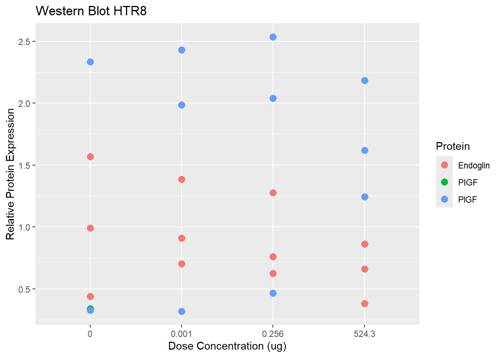

This document is an attempt to work alternative statistics for the article Cell-Type-Specific Immuno-Angiogenic Modulation in Trophoblasts by Curcumin Solid Lipid Nanoparticles.
The Data
First, let’s take a look at the data:
We are working in the statistics of topic 4.1 Modulation of Inflammation and Angiogenesis in Trophoblast Cells.
Here, the authors measure the expression of two proteins:
PIGF
Endoglin
Through four groups, the Control group and other three groups of crescent concentrations:
0.001
0.256
524.3
And through two cell lines:
HTR8/SVneo
BeWo
#install.packages("magick")library(magick)
Warning: pacote 'magick' foi compilado no R versão 4.5.2
dataWB_HTR8$conc <-as.character( dataWB_HTR8$conc ) #Changing concentration to character instead of double so we can plot smoother
HTR8
We shall begin with HTR8 cells
Let’s plot the data for some insights
#install.packages("tidyverse") #installing tidyverse for some visualization toolslibrary( tidyverse ) #loading tidyverseggplot(data = dataWB_HTR8 ) +geom_point(mapping =aes(x = conc, y = exp, colour = prot ), size =3 ) +labs(title ="Western Blot HTR8",x ="Dose Concentration (ug)",y ="Relative Protein Expression",color ="Protein" )

Original Statistics
In the original statistics, it was performed an ANOVA test between control and concentration groups, for the two proteins and cell lines, which did not performed significantly.
In my perception, the data has a correlation, so measuring the difference between groups (such as using ANOVA) may hide this behavior.
Alternative statistics
Now what I’m going to do is try an alternative statistic, involving fitting a regression line trough the data and trying to prove that the angular coefficient is significantly different than zero.
#Let's change concentration back to "numeric" so we can do some calculationsdataWB_HTR8$conc <-as.numeric( dataWB_HTR8$conc)#Let's see if it workedhead(dataWB_HTR8)
#Now lets try fitting a regression#first, for EndoglinEndHTR8 <-lm( exp ~ conc,data = dataWB_HTR8,subset = prot =="Endoglin")#Let's see if it workedsummary( EndHTR8 )
Call:
lm(formula = exp ~ conc, data = dataWB_HTR8, subset = prot ==
"Endoglin")
Residuals:
Min 1Q Median 3Q Max
-0.52215 -0.25480 -0.01302 0.24852 0.60587
Coefficients:
Estimate Std. Error t value Pr(>|t|)
(Intercept) 0.9626183 0.1183392 8.134 1.02e-05 ***
conc -0.0006231 0.0004514 -1.380 0.198
---
Signif. codes: 0 '***' 0.001 '**' 0.01 '*' 0.05 '.' 0.1 ' ' 1
Residual standard error: 0.355 on 10 degrees of freedom
Multiple R-squared: 0.1601, Adjusted R-squared: 0.07606
F-statistic: 1.905 on 1 and 10 DF, p-value: 0.1975
So, for Endoglin, the variance of the linear regression does not vary significantly from a line with an angular coefficient of zero.
#Now, let's see for PIGFPIGFHTR8 <-lm( exp ~ conc,data = dataWB_HTR8,subset = prot =="PlGF")tail( dataWB_HTR8$prot ) #checking the name in the dataframe, something happened in the importation
[1] "PlGF" "PlGF" "PlGF" "PlGF" "PlGF" "PlGF"
#Let's see the resultssummary( PIGFHTR8 )
Call:
lm(formula = exp ~ conc, data = dataWB_HTR8, subset = prot ==
"PlGF")
Residuals:
Min 1Q Median 3Q Max
-1.2346 -0.7631 0.4308 0.6399 0.9811
Coefficients:
Estimate Std. Error t value Pr(>|t|)
(Intercept) 1.5551479 0.3211281 4.843 0.000917 ***
conc 0.0002415 0.0011728 0.206 0.841458
---
Signif. codes: 0 '***' 0.001 '**' 0.01 '*' 0.05 '.' 0.1 ' ' 1
Residual standard error: 0.9081 on 9 degrees of freedom
Multiple R-squared: 0.004688, Adjusted R-squared: -0.1059
F-statistic: 0.04239 on 1 and 9 DF, p-value: 0.8415
We achieved the same result with PIGF.
BeWo
Now, let’s try with BeWo cells
#First, let's import the datadataWB_BeWo <-read.csv("Dados_westernblot_form_BeWo.csv")#Let's view the dataView( dataWB_BeWo )head( dataWB_BeWo )
Call:
lm(formula = exp ~ conc, data = dataWB_BeWo, subset = prot ==
"PlGF")
Residuals:
Min 1Q Median 3Q Max
-0.57213 -0.17847 -0.07404 0.14288 0.90734
Coefficients:
Estimate Std. Error t value Pr(>|t|)
(Intercept) 1.1695439 0.1305578 8.958 4.32e-06 ***
conc -0.0003101 0.0004980 -0.623 0.547
---
Signif. codes: 0 '***' 0.001 '**' 0.01 '*' 0.05 '.' 0.1 ' ' 1
Residual standard error: 0.3916 on 10 degrees of freedom
Multiple R-squared: 0.03733, Adjusted R-squared: -0.05893
F-statistic: 0.3878 on 1 and 10 DF, p-value: 0.5474
Summarizing, none of the expressions varied in such a way that fitting a regression would achieve an angular coefficient significantly different than zero.